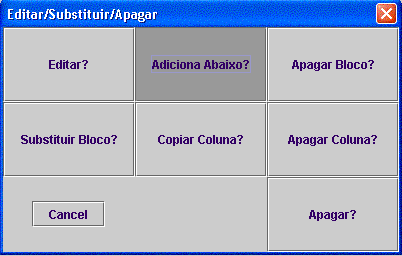
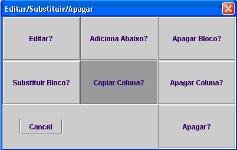
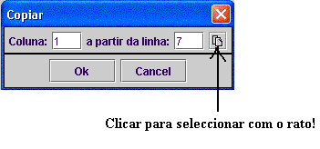
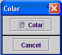
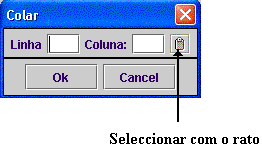

Inserir um bloco entre dois já existentes:
Clicar com o botão esquerdo do rato sobre o bloco que vai ficar acima do bloco introduzido.
Seleccionar a opção adiciona abaixo:

Usando a opção copiar+colar
Existem dois modos para copiar:
1-Clicando no bloco que se pretende copiar com o botão esquerdo e seleccionar a opção copiar coluna:

2-Através da opção copiar no menu Editar:

nota: se existirem blocos abaixo (na mesma coluna) do seleccionado estes também serão copiados.
Existem três modos para colar os blocos:
1-À direita ou à esquerda, da mesma forma que se insere à direita ou à esquerda e respeitando as mesmas regras.
2-Abaixo de um bloco clicando com o botão direito do rato, abaixo desse bloco:

3- Através da opção colar no menu Editar:
